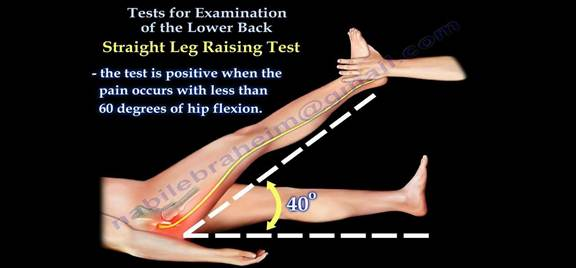
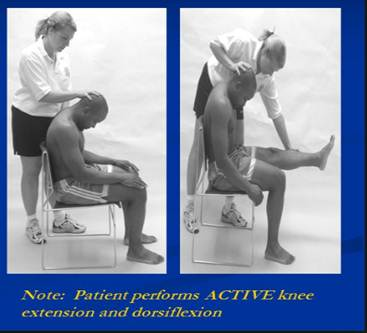

Lower Back Pain
Executive summary
Introduction
Lower back pain is a very common presentation in General Medical Practice. Up to 80-90% of people will suffer lower back pain (LBP) in their lifetime. Lower back pain is classified as acute lower back pain (duration < 6 weeks), sub-acute lower back pain (6-12 weeks) and chronic lower back pain (> 3 months). Most lower pain results from benign acute musculoskeletal conditions, relating to the strain put on the back during work, leisure and daily life
Target users
· Nurses
· Doctors
Target area of use
· Gate Clinic
· OPD
Key areas of focus / New additions / Changes
Features suggestive of serious or unusual causes of lower back pain should be sought for during history and physical examination. Investigations are most useful for patients with unremitting acute lower back pain and in other patients with severe or suspicious features. General measures for treatment include lifestyle changes, analgesia and physical therapy.
Limitations
Patients may need referral for physiotherapy and specialist services which are not available in our facility.
Common causes of LBP
· Minor tissue injuries – by far the commonest. Settles easily usually
· Mechanical back pain – dysfunction of elements of facet joint, intervertebral joint (with its disc) and the ligamentous and muscular attachments (also known as ‘non-specific back pain’).
· Lumbar spondylosis
· Spondylolisthesis
· Musculoligamentous strain/tears
· Spondyloarthropathies: Ankylosing spondylitis, reactive arthritis
· Malignant disease: Metastasis
· Depression
History
A focused history taking should be conducted to place patient with low back pain into one of three categories:
1. Non-specific low back pain: SOCRATES- Site Onset Character Radiation Activity inTensity Exacerbating/Relieving factors & Symptoms associated
2. Back pain potentially associated with radiculopathy or spinal stenosis
3. Back pain associated with another specific spinal cause (tumour, infection, fracture).
Diagnostic pointers
· Continuous pain (day and night), fever +/- Constitutional symptoms = Neoplasia or infection.
· Pain with standing/walking (relief with sitting) = Spondylolisthesis
· Pain (and stiffness) at rest, relief with activity = Inflammation
· Stiffness at rest, pain with or after activity, relief with rest = osteoarthritis.
· Pain provoked by activity, relieved with rest = mechanical dysfunction
· Pain in bed at early morning = depression then inflammation, or malignancy/infection.
Red flags for serious causes of LBP
· Unremitting/constant pain- worse at night pain
· Unexplained weight loss
· Symptoms in other systems e.g. cough, breast mass
· Progressive neurological deficit: e.g. weakness in limbs, loss of sphincteric control
· Bilateral sciatica
· Age at onset> 50 years and < 20 years
· Associated temperature > 37.8ºC
· Significant/violent trauma
· No improvement after one month
· Recent onset bladder dysfunction
· History of cancer
Yellow flag signs in LBP (Psychosocial issues that impede recovery)
· Compensation issues
· Failure to return to work
· Refusal of treatment
· Unsatisfactory response to treatment
· Atypical physical signs
· Unsupportive home environment
· Inappropriate expectations
· Belief that activity & physiotherapy are harmful
Examination- Gait, Look, Move & Special Tests
The main components of the physical examination are:
· Inspection: abnormalities of gait (stance & sway), spine curvatures, scars revealing previous spine procedure or trauma, spine abnormalities (e.g. gibbus) etc.
· Active movements: These includes forward flexion (to reproduce patient symptoms), extension (to reproduce patient’s symptoms), lateral flexion (R&L) to reproduce patient’s symptoms.
· Provocative tests (to reproduce the patient’s symptoms) e.g. Slump test, Lasegue or straight leg raising test, Cross straight leg raising test
· Palpation (to detect level of tenderness).
· Neurological examination of lower limbs (if appropriate).
· Testing of related joints (hip, sacroiliac).
· Assessment of pelvis and lower limbs for any deformity (e.g. leg shortening).
· General medical examination, including rectal examination as indicated in patients presentation


Management
For acute lower back pain
Explanation and reassurance.
Back education:
· Lie down on side with pillow in between thigh, avoid lying down on the back.
· Do not slouch when sitting on chairs.
· Sit up straight with back abutting on the chair back.
· Place on foot on a small stool/platform if prolonged sitting for 2 hours or more warranted.
· Walk around for 15 minutes after every two hours of sitting down.
Encouragement of normal daily activities according to degree of comfort.
Prescribe simple exercises (provided no aggravation of pain).
Regular non-opioid analgesics (e.g. paracetamol).
Consider physiotherapy based on your assessment of the severity.
If very severe, review in about 5 days – one week (probably best time for physiotherapy).
No investigation is needed initially!!
For sub-acute lower back pain
If severe or any diagnostic pointer (as listed above) present:
· Plain x- rays of the affected part. Review this with the most experienced clinician around after going through it yourself.
· ESR, PSA (for staff or where they can afford it) in males older than 50 years.
· Blood culture if pyogenic infection suspected.
· For longstanding disorders especially mechanical disorders e.g. CT scan, MRI.
For chronic lower back pain
Investigate as under sub-acute lower back pain.
Back education (as highlighted above) and ongoing support
Encouragement of normal activity
Prescription of simple exercise as the client’s body permits.
Analgesics (e.g. P.O. Paracetamol 500 mg - 1 g up to QDS for 4 days).
NSAIDs for 14–21 days (especially if inflammation is suspected).
Graded physiotherapy with trial of mobilisation (at least three treatments) – if no contraindications.
Consider amitriptyline 10-25 mg (nocte) increasing to maximum 75–100 mg
Refer appropriately based on what you find while investigating.
A multidisciplinary team approach is recommended – Primary care physician, physiotherapist and the orthopaedic surgeon.
Follow up
Patients should be informed that an ongoing back care program should give them an excellent outlook.
Prevention
· Education about back care.
· Golden rules to live by: how to lift, sit, and bend.
· An exercise program: a tailor-made program for the patient.
When to refer to a specialist – orthopaedic, neurosurgeon or spine specialist
· Myelopathy, especially acute cauda equina compression syndrome.
· Severe radiculopathy with progressive neurologic deficit.
· Spinal fractures.
References
Murtagh JM General Practice . 2015. McGraw Hill, Australia Pgs. 401-421
Royal College of General Practitioners et al. Clinical Guidelines for the Management of Acute Low Back Pain. London: RCGP, 1996.
Sloane P, Slatt M, Baker R. Essentials of Family Medicine. Baltimore: Williams & Wilkins, 1988: 228–35.
Kenna C, Murtagh J. Back Pain and Spinal Manipulation (2nd edn). Oxford: Butterworth Heinemann, 1997: 70–164
American Chronic Pain association-Guidelines on management of Low back pain.
American Physical Therapy Low back pain clinical guidelines on the International classification of functioning disability and health
|
Written by: |
Name: Babatunde Awokola |
Date: 13 May 2018 |
|
Reviewed by: |
Name: Fatai Akemokwe |
Date: 4 July 2018 |
|
Version: |
Change history: |
Review due date: |
|
1.0 |
New document |
|
|
2.0 |
Rewritten and updated |
31 July 2020 |
|
2.1 |
Executive summary added |
31 July 2020 |
|
Review Comments (if applicable) |
|
|